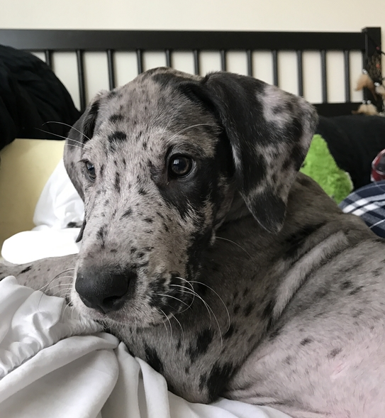

Welcome to the layout lab. This page contains the instructions for what to do...with this page. First, download this file as well as the puppy image that it uses, create a CSS file to go along with it, and <link> it from the <head> section of the page.
Then, follow the instructions in this page to set various layout properties.
Wrap the <h1> and <h2> at the beginning of the page in a <header>, and center them with the text-align property.
Below this text is the main content area. It should be 70% wide, and centered in the page. Wrap the two columns together into one page section (<main>), and make that page section a flex container by setting it's display property to flex.
Right column
This column is on the right of the main content area. It takes up 2/3 of the main content area width. Accomplish this by setting it's flex-basis to 67%.

Float the above image to the right, so that it's to the right of this text instead of above it. Set it's width to 200px so that it isn't so huge. The height will adjust to keep the scale of the image.
For this paragraph, we don't want the text to wrap around the floating image anymore. Use clear: both to cause this paragraph to move down below the floating image. Give it an id or a class so that you can select this paragraph specifically in your CSS.
Both columns should have 2em of padding, 2em of margin, and a 4px dashed red border. Give both columns a class that they can share so that you don't have to duplicate this box model CSS.
Finally, use position: fixed to set the position of this paragraph element so that is is 5px away from the bottom of the browser view port. Depending on how big your browser screen is, other text from the page might overlap with it. That proves to be a big challenge with fixed position elements.